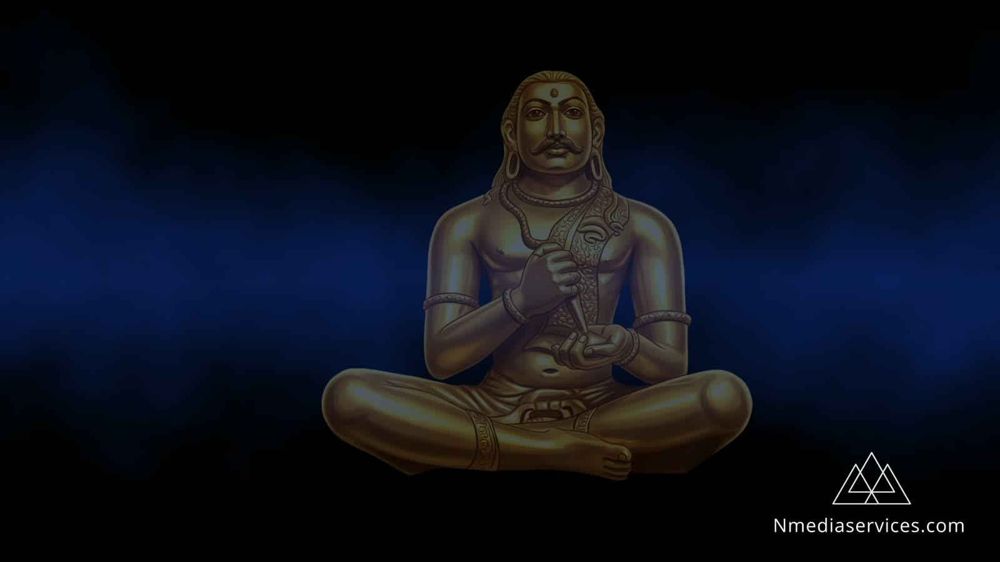
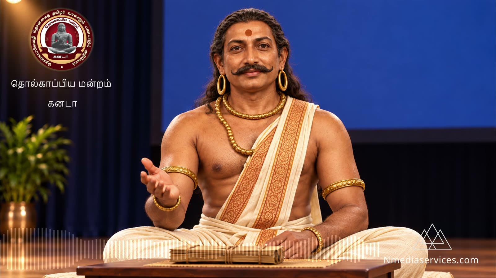
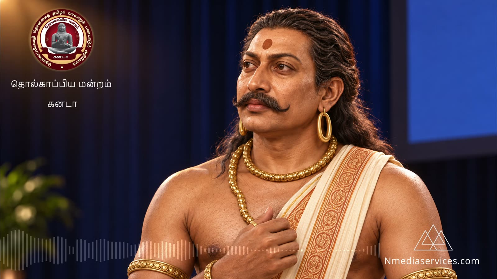
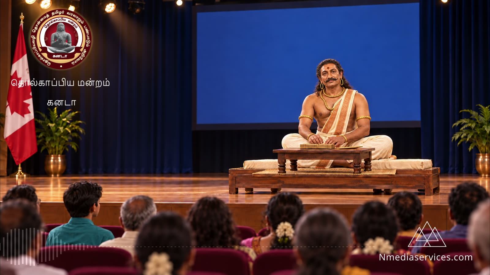
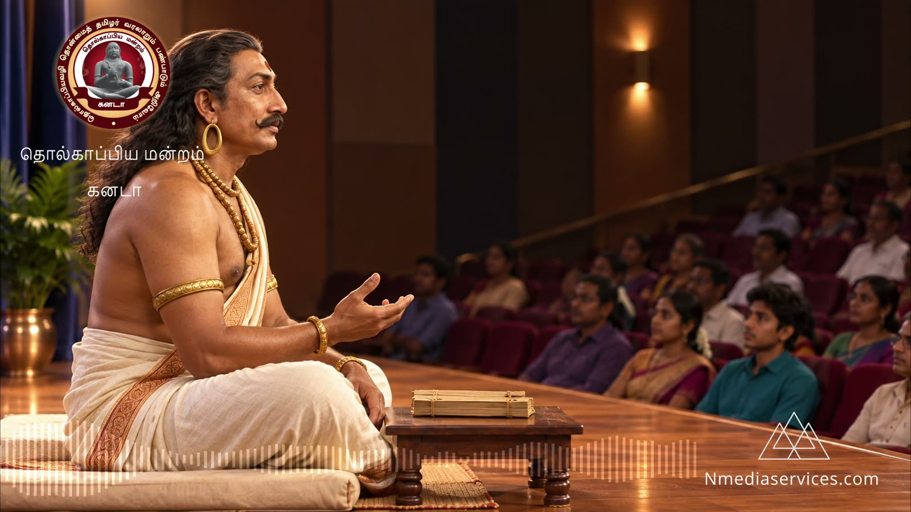
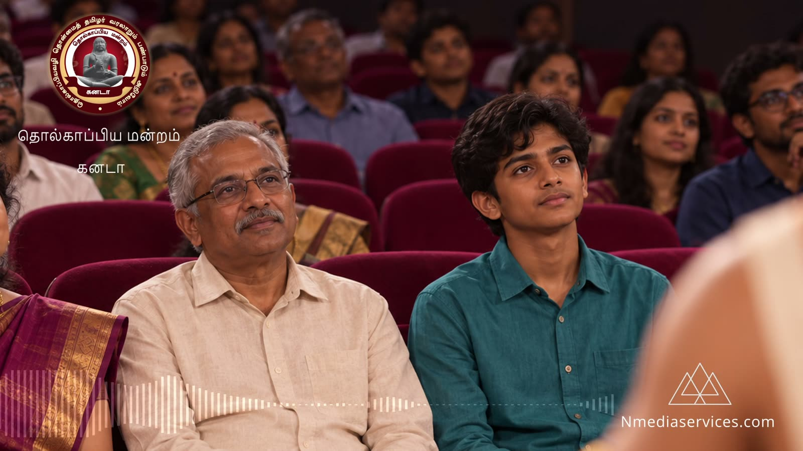
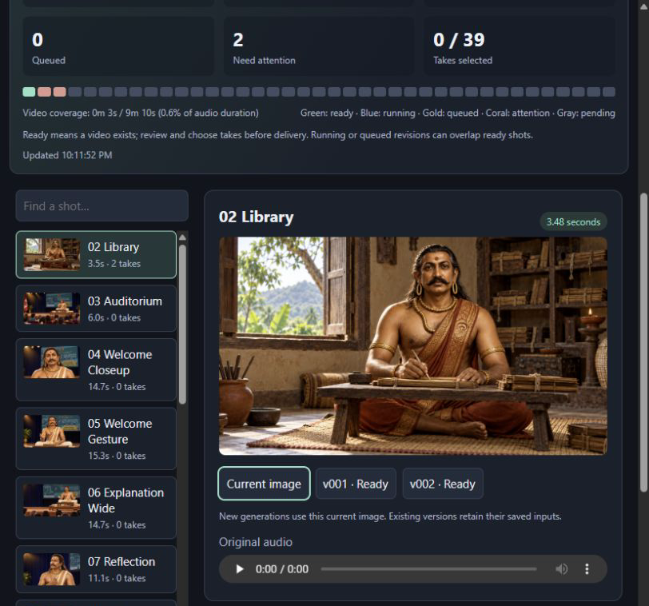
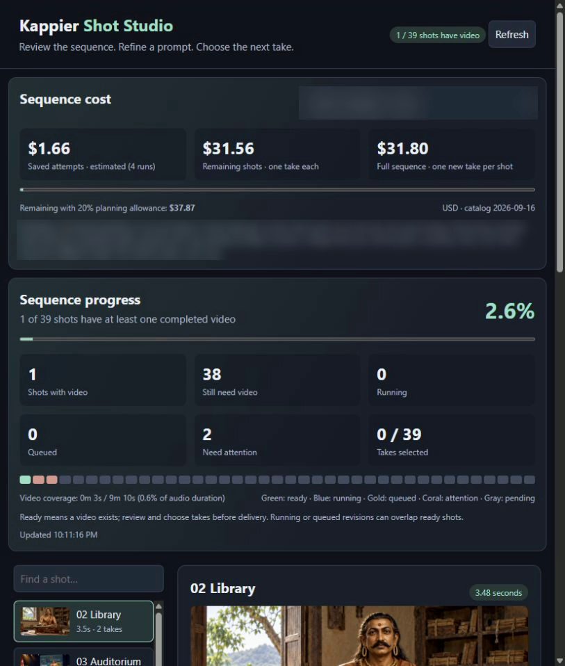

Generating one AI video is a web form. Directing thirty-nine of them into a single performance is a production, and productions need a desk, not a folder of batch files.
01The brief
Tholkappiyar wrote the Tholkappiyam, the oldest surviving grammar of the Tamil language. The Tholkappiya Mantram in Canada wanted him to address their conference in person: welcoming the hall, explaining why he wrote, walking through letters, words and literary convention, and handing the tradition on to the diaspora's young readers.
The address was recorded in Tamil, split into 18 sections and storyboarded into 39 shots. Each shot is a reference image, a clip of the real voice performance and a written direction for camera and body.






02One clip is easy. Thirty-nine is a production.
A sequence is a stack of decisions: which image is current, which prompt produced which take, whether a shot is lip-synced or a voice-over on the audience, what fits the budget, and which take is actually good enough to cut.
Before Shot Studio that lived in folder names, batch files and memory. Now it lives on one screen.
03Built around the shot
The shot list keeps the running order. Select a shot and its reference image, recorded voice and every saved take appear together. Rewrite the direction beside the preview and queue a new take. Earlier takes are never overwritten.
Shots are flagged as speaking or voice-over, so listeners and manuscript close-ups keep the narration without being lip-synced into talking.

"A prompt edit should shape the next take, not quietly change one already waiting in the queue."
04Every take is recoverable
Each queued job freezes its own copy of the image, audio and prompt. Progress is recorded as the job runs, so an interrupted job resumes instead of being paid for twice. If a submission's result is uncertain, the desk stops and asks rather than silently resubmitting.
05See the bill before you press the button
The top of the studio answers two questions: how far along is the sequence, and what will the rest cost? A colour strip shows every shot as ready, running, queued, needing attention or pending. Duration coverage sits beside the shot count, because a three-second insert and a thirty-second speech are not equal work.
The budget panel compares saved attempts, the shots still missing and a full new pass, using a dated price catalogue. Every paid generation gets its own estimate and confirmation before anything is spent.

06Built for the production desk
Shot Studio is a lightweight web app that runs on the production machine. Generations run one at a time in a managed queue, and long speeches are covered in full without ever speeding up the voice.
Nothing is exposed beyond the studio machine, and credentials never reach the browser. An offline test suite checks estimates, versioning and recovery without spending a cent. Chosen takes export in running order, ready for the editor.